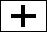

After entering the required values in the form, click the
Compute button. This will display a diagram of the Ling adder in the right frame.
Timing data will also be displayed.
-
The top row of the diagram consists of adders represented by the following symbol:

These adders calculate the individual sum bits (represented
by the short arrow) based upon the two inputs and a carry-in. This cell also generates
Generate and Propagate signals, respectively. Generate is the long arrow on
the left of the cell, and Propagate is the long arrow in the middle. The Propagate signal
for the Ling adder differs slightly from that of the conventional carry look-ahead adder.
Instead of a logical XOR of the input bits, the Propagate signal (ti) is the
OR of the inputs. The Propagate and Generate signals are functions of only the two
input bits.
-
Two levels of "Ling" carry-look-ahead generators are used. The arrows under each block
represent Hi:j* and Pi:j* that are being generated from that block.
The time taken to generate each sum bit is displayed on the bottom, as well as the total
time. For comparison, the time required for a tradional carry look-ahead is also calculated.
The advantage of the Ling implementation is largely dependent on the block size and maximum
fan-in. The Ling implementation uses considerably fewer signals and gates, but this does not
necessarily translate into faster addition time.